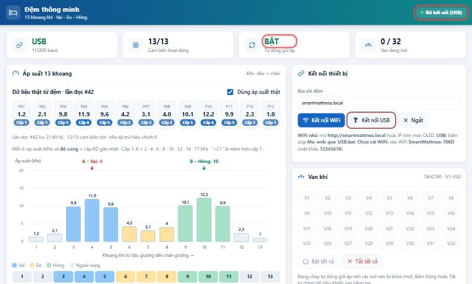
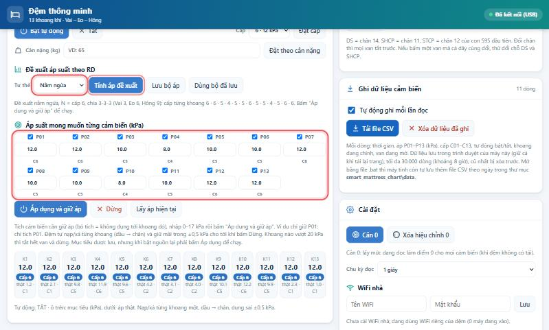
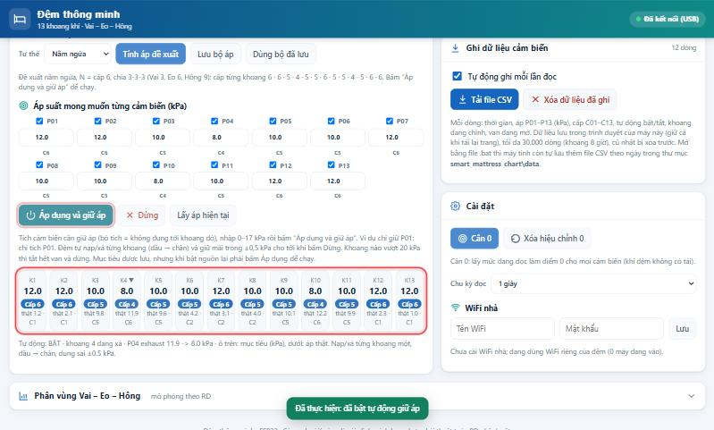
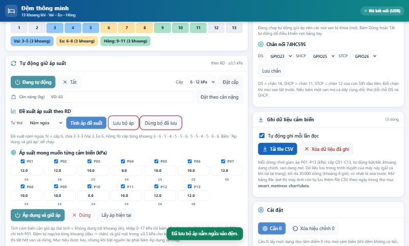
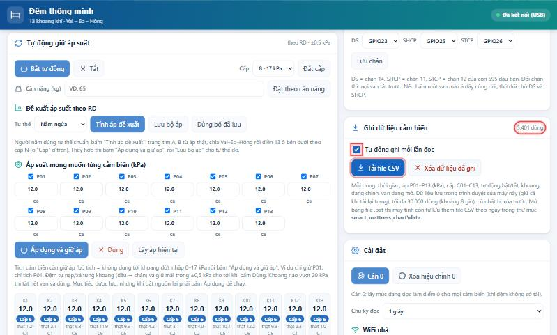

Hướng dẫn sử dụng Đệm thông minh
Từ lúc cắm điện tới khi đệm tự giữ áp theo tư thế: kết nối, ý nghĩa từng thẻ và từng nút trên trang web, cách đệm tìm vai và hông (A, B), cách tính áp đề xuất, lưu đồ chạy chương trình và cách xử lý sự cố. Ảnh chụp từ trang thật với số liệu mẫu; sơ đồ vẽ lại để giải thích.
Mới trong bản này
- Đặt theo cân nặng rồi mời nằm lên: nhập cân nặng, đệm đưa 13 khoang về áp theo cân nặng rồi tự dừng và báo "mời nằm lên"; người nằm lên, chọn tư thế, bấm Phân tích cơ thể (mục Đặt theo cân nặng). Cần nạp bản mới
- Tự chuyển bộ áp theo tư thế: cứ 5 phút đệm kiểm tra người đang nằm tư thế nào và tự chuyển sang bộ áp đã lưu khớp nhất (mục Tự chuyển tư thế). Cần nạp bản mới
- Lưu đồ đã thêm bước đặt theo cân nặng và chu kỳ tự chuyển tư thế (khung viền xanh lá).
- Thêm bảng tóm tắt nhanh các nút.
Tóm tắt nhanh các nút
| Nút | Bấm khi nào |
|---|---|
| Kết nối WiFi / Kết nối USB / Ngắt | Nối hoặc ngắt trang với đệm. |
| Bật tự động / Tắt | Bật hoặc tắt giữ áp theo bộ đang lưu trong đệm. |
| Đặt cấp | Chọn cấp nền N bằng tay. |
| Đặt theo cân nặng | Chưa có người nằm: đệm đưa 13 khoang về áp theo cân nặng rồi tự dừng, báo "mời nằm lên". Cần nạp bản mới |
| Phân tích cơ thể | Người đã nằm lên và chọn tư thế: tìm A, B và đề xuất áp ở cấp N. Cần nạp bản mới |
| Giữ áp lại | Bỏ qua phân tích, cho đệm giữ áp tiếp. Cần nạp bản mới |
| Tìm A, B | Người đang nằm tư thế chuẩn, muốn biết vai và hông ở khoang nào. |
| Tính áp đề xuất | Điền 13 ô mục tiêu theo RD cho tư thế đang chọn. |
| Lấy áp hiện tại | Điền 13 ô bằng áp đang đọc. |
| Áp dụng và giữ áp | Chạy: đệm nạp/xả tới 13 ô mục tiêu rồi giữ. |
| Lưu bộ áp / Dùng bộ đã lưu | Lưu hoặc gọi lại bộ áp của tư thế đang chọn (ngửa, nghiêng, tự do). |
| Dừng | Dừng mọi thứ: tắt tự động, đóng van, dừng bơm. |
| Nút V1–V32, Bật tất cả, Tắt tất cả | Thử van bằng tay (phải Dừng tự động trước). |
| Lưu chân | Đổi chân DS/SHCP/STCP của 74HC595. |
| Tải file CSV / Xóa dữ liệu đã ghi | Lấy hoặc xóa dữ liệu cảm biến đã ghi trên máy đang mở trang. |
| Cân 0 / Xóa hiệu chỉnh 0 | Đặt hoặc bỏ điểm 0 cảm biến (đệm xả hết hơi, không người). |
| Lưu (WiFi) | Cho đệm vào WiFi nhà. |
Phần 1 · Làm quen
Đệm gồm những gì
Đệm có 13 khoang khí đánh số từ đầu xuống chân (K1–K13). Mỗi khoang có một cảm biến áp suất AGR12 (P01–P13). Bo ESP32 đọc 13 cảm biến, bật tắt van qua 4 IC 74HC595, hiện số lên màn OLED và phát trang web điều khiển.
Độ cứng: cấp 1–8
Trang web và RD dùng cấp thay cho kPa. Mỗi giá trị áp trên trang có nhãn Cấp n là cấp gần nhất; dưới 1 kPa ghi "<C1".
| Cấp | 1 | 2 | 3 | 4 | 5 | 6 | 7 | 8 |
|---|---|---|---|---|---|---|---|---|
| kPa | 2 | 4 | 6 | 8 | 10 | 12 | 14 | 17 |
Kết nối với đệm
Chọn một trong ba cách. Khi kết nối được, góc trên bên phải hiện Đã kết nối.
SmartMattress-708D, mật khẩu 12345678. Trang tự bật, hoặc mở trình duyệt gõ http://192.168.4.1.Mo_web_qua_USB.bat trong thư mục smart_mattress_chart. Giữ cửa sổ đen mở suốt lúc dùng. Phải đóng idf.py monitor trước (cả hai cùng dùng COM11).http://smartmattress.local hoặc địa chỉ IP hiện trên OLED.
Bật nguồn: đệm tự bơm lên 17 kPa
- Cấp nguồn 24 V cho van và bơm, và nguồn cho bo ESP32.
- Màn OLED hiện 13 giá trị P01–P13 (kPa). Cứ 15 giây, màn hiện 3 giây địa chỉ mở web.
- Đệm chờ tới khi đọc được đủ 13 cảm biến, ổn định 3 lần liên tiếp. Nếu có cảm biến lỗi, đệm chờ chứ không bơm.
- Đệm tự bơm từng khoang, từ đầu xuống chân, lên 17 kPa (cấp 8) rồi giữ trong khoảng ±0,5 kPa.
Không muốn đệm tự bơm: mở web và bấm Dừng. Lần cắm điện sau đệm lại tự bơm.
Phần 2 · Trang web, từng thẻ và từng nút
Các thẻ trên trang và việc của từng nút
Trang chia hai cột trên máy tính (một cột trên điện thoại). Các nút cần đệm trả lời sẽ quay vòng trong lúc chờ, xong thì có viền xanh (đã làm) hoặc viền đỏ (bị từ chối), kèm thông báo nổi ở cuối màn hình.
Hàng thẻ trên cùng
Tóm tắt nhanh: trạng thái kết nối, áp cao nhất/thấp nhất, và thẻ Tự động (BẬT khi đệm đang tự bơm/giữ áp).
Thẻ "Áp suất 13 khoang"
| Thành phần | Việc nó làm |
|---|---|
| 13 ô P01–P13 | Áp thật từng khoang (kPa) và nhãn cấp. Ô đỏ ERR là cảm biến đó đọc lỗi (xem Xử lý sự cố). |
| Ô tích Dùng áp suất thật | Biểu đồ phân vùng ở cuối trang vẽ theo áp thật thay vì số liệu ví dụ. |
| Dải màu Vai / Eo / Hông | Vùng đang dùng để tính áp đề xuất (sau khi bấm Tìm A, B). |
Thẻ "Tự động giữ áp suất"
| Nút / ô | Việc nó làm |
|---|---|
| Bật tự động / Tắt | Bật: đệm giữ áp theo 13 ô mục tiêu đang lưu trong đệm; nút đổi xanh "Đang tự động". Tắt: dừng tự động, mọi van đóng. |
| Ô Cấp + Đặt cấp | Chọn cấp nền N (1–8) cho cả đệm. |
| Ô Cân nặng + Đặt theo cân nặng | Chọn N theo cân nặng (≤ 60 kg → cấp 6 = 12 kPa; ≤ 80 kg → cấp 7 = 14 kPa; trên 80 kg → cấp 8 = 17 kPa), rồi tự động đưa cả 13 khoang về áp đó (Pcn). Trang hiện "Đang đưa các khoang về áp theo cân nặng…". Đủ 13 khoang thì đệm tự dừng giữ, đóng mọi van, và hiện khung xanh "Đã đạt áp theo cân nặng, mời nằm lên". Cần nạp bản mới |
| Phân tích cơ thể (hiện sau khi đạt áp theo cân nặng) | Người đã nằm lên và chọn Tư thế: tìm A, B từ áp thật, chia vùng và đề xuất 13 ô mục tiêu ở cấp N. Sau đó bấm Áp dụng và giữ áp. |
| Giữ áp lại | Không phân tích, cho đệm giữ áp Pcn tiếp như trước. |
| Ô Tư thế | Nằm ngửa, Nằm nghiêng, Nằm tự do. Quyết định bảng N-x dùng để tính và bộ áp được lưu/dùng. |
| Tính áp đề xuất | Tìm A, B từ áp thật (trừ Nằm tự do), chia vùng, rồi điền 13 ô mục tiêu theo bảng RD và tích cả 13 ô. Chưa gửi xuống đệm. |
| Lưu bộ áp | Lưu 13 ô mục tiêu và các ô đang tích vào bộ nhớ đệm, theo tư thế đang chọn (3 bộ riêng). |
| Dùng bộ đã lưu | Điền lại 13 ô từ bộ đã lưu của tư thế đang chọn. Chưa chạy. |
| 13 ô mục tiêu P01–P13 và ô tích | Áp muốn giữ (0–17 kPa), cấp hiện dưới mỗi ô. Chỉ khoang được tích mới được chỉnh; khoang bỏ tích để nguyên. |
| Áp dụng và giữ áp | Gửi 13 ô xuống đệm và bật tự động. Đệm nạp/xả từng khoang, đầu → chân, tới ±0,5 kPa rồi giữ mãi. |
| Dừng | Tắt tự động, đóng mọi van, dừng bơm. Áp trong đệm giữ nguyên. |
| Lấy áp hiện tại | Điền 13 ô mục tiêu bằng áp đang đọc được, tiện để giữ nguyên trạng thái hiện tại hoặc sửa từ đó. |
| Hàng K1–K13 | Số lớn: mục tiêu và cấp. Dòng nhỏ: áp thật và cấp thật. ▲ đang nạp, ▼ đang xả. |
Thẻ "Kết nối thiết bị"
| Kết nối WiFi | Kết nối qua WiFi tới địa chỉ trong ô (mặc định đúng địa chỉ trang đang mở). |
| Kết nối USB | Kết nối thẳng qua cổng COM (Chrome/Edge trên máy tính). Không dùng được khi monitor hoặc .bat đang giữ COM11. |
| Ngắt | Ngắt kết nối. Sau 30 giây không có ai kết nối, đệm tự tắt các van bật bằng tay. |
Thẻ "Van khí" và "Chân nối 74HC595"
Xem mục Van bằng tay.
Thẻ "Ghi dữ liệu cảm biến"
Xem mục Ghi dữ liệu.
Thẻ "Cài đặt"
| Cân 0 | Lấy mức đang đọc làm điểm 0 cho cả 13 cảm biến và lưu trong đệm. Chỉ bấm khi đệm xả hết hơi, không có người (bấm Dừng trước). |
| Xóa hiệu chỉnh 0 | Bỏ điểm 0 đã lưu, quay về số đọc gốc. |
| Ô Chu kỳ đọc | 0,5 / 1 / 2 / 5 giây giữa hai lần đọc 13 cảm biến. |
| Tên WiFi, Mật khẩu, Lưu | Cho đệm vào WiFi nhà. WiFi riêng SmartMattress-708D vẫn luôn bật. |
Mục "Phân vùng Vai – Eo – Hông" (cuối trang, bấm để mở)
| Tìm A, B từ áp suất hiện tại | Tìm A, B và cách chia vùng từ áp thật (xem Cách chọn A, B). Kết quả hiện ngay cạnh nút và trên biểu đồ. |
| Ví dụ 1–5 | Năm ví dụ trong đề bài RD để đối chiếu. |
| Ô A, B, đầu vùng, phương án | Sửa tay vị trí A, B và phân vùng nếu muốn thử. |
| Tải SVG, Xuất JSON, In, Khôi phục ví dụ | Lưu biểu đồ, lưu số liệu, in trang, đưa về ví dụ ban đầu. |
Phần 3 · Chu trình chỉnh áp theo RD
Chu trình từng bước
- Cân 0 (lần đầu hoặc khi thay cảm biến): Dừng → để đệm xả hết hơi, không người nằm → Cài đặt → Cân 0.
- Đặt theo cân nặng (chưa có người nằm): nhập cân nặng → Đặt theo cân nặng. Đợi khung xanh "Đã đạt áp theo cân nặng, mời nằm lên" (xem mục 5).
- Người nằm lên đúng tư thế chuẩn: ngửa thì duỗi thẳng, hai tay đặt trên ngực; nghiêng thì hai chân chồng nhau, co 90°.
- Chọn Tư thế rồi bấm Phân tích cơ thể. Trang tìm A, B và điền 13 ô ở cấp N (Nằm tự do thì không cần A, B). Bản firmware cũ: dùng Đặt cấp và Tính áp đề xuất.
- Có thể sửa tay vài ô, bỏ tích khoang không muốn chỉnh.
- Bấm Áp dụng và giữ áp. Đợi đệm nạp/xả xong (hàng K1–K13 hết ▲▼).
- Người nằm cảm nhận. Chưa thoải mái → sửa vài ô → bấm lại Áp dụng.
- Ưng rồi → Lưu bộ áp (giữ đúng tư thế đang chọn).
- Lần sau: chọn tư thế → Dùng bộ đã lưu → Áp dụng và giữ áp.
- Khi đã lưu từ 2 bộ trở lên, đệm tự chuyển bộ khi người đổi tư thế (xem mục 6).



Đặt theo cân nặng rồi mời nằm lên Cần nạp bản mới
Đây là cách bắt đầu một lần chỉnh áp cho một người mới.
- Đệm chưa có người nằm. Nhập cân nặng vào ô Cân nặng, bấm Đặt theo cân nặng.
- Đệm tự động đưa cả 13 khoang về áp theo cân nặng (Pcn). Trang hiện "Đang đưa các khoang về áp theo cân nặng…".
- Khi đủ 13 khoang đạt áp, đệm tự dừng giữ áp, đóng mọi van, trang hiện khung xanh "Đã đạt áp theo cân nặng, mời nằm lên".
- Người nằm lên đúng tư thế chuẩn. Chọn Tư thế, rồi:
- bấm Phân tích cơ thể: tìm A, B và đề xuất 13 ô ở cấp N, sau đó bấm Áp dụng và giữ áp; hoặc
- bấm Giữ áp lại nếu không muốn phân tích, đệm giữ áp Pcn tiếp.
| Cân nặng | ≤ 60 kg | 61–80 kg | > 80 kg |
|---|---|---|---|
| Cấp N | 6 | 7 | 8 |
| Pcn (cả 13 khoang) | 12 kPa | 14 kPa | 17 kPa |
Tự chuyển bộ áp theo tư thế Cần nạp bản mới
Khi đệm đang tự động giữ áp, nó tự nhận người đang nằm ngửa, nghiêng hay tự do và chuyển sang bộ áp đã lưu tương ứng. Không cần bấm gì thêm.
Điều kiện
- Đã lưu ít nhất 2 bộ áp (trong 3 bộ: ngửa, nghiêng, tự do) bằng nút Lưu bộ áp.
- Đang ở chế độ tự động (đã bấm Áp dụng và giữ áp hoặc Bật tự động).
Cách hoạt động
- Cứ 5 phút, đệm tạm dừng giữ áp trong 1 phút và đóng mọi van, để áp trong khoang phản ánh đúng người đang nằm.
- Trong phút đó, đệm so 13 áp thật với từng bộ đã lưu.
- Bộ nào khớp ±0,5 kPa ở mọi khoang suốt cả phút thì đệm chuyển sang bộ đó. Việc so có tính cả trường hợp người xê dịch lên hoặc xuống vài khoang.
- Không bộ nào khớp và hơn nửa số khoang lệch khỏi bộ đang giữ: đệm chuyển sang Nằm tự do.
- Không bộ nào khớp nhưng lệch ít (không quá nửa số khoang): giữ bộ hiện tại.
- Đệm giữ áp tiếp theo bộ được chọn, 5 phút sau kiểm tra lại.
Xem trên trang web
- Lúc giữ áp:
Bộ đang giữ: … · kiểm tra tư thế sau m:ss(đếm ngược tới lần kiểm tra sau). - Trong phút kiểm tra:
Đang kiểm tra tư thế…. Lúc này van đóng hết là bình thường.
Cách chọn A, B và chia vùng Vai – Eo – Hông
A là khoang chịu áp cao nhất ở vùng vai, B là khoang chịu áp cao nhất ở vùng hông. Khi người nằm, vai và hông đè nặng nhất nên áp ở hai chỗ đó tạo thành hai đỉnh.
Các bước trang web làm khi bấm Tìm A, B (hoặc Phân tích cơ thể, Tính áp đề xuất)
- Đọc 13 áp thật P01–P13 lúc người đang nằm tư thế chuẩn.
- Gom các đỉnh: những khoang liền nhau có áp gần bằng nhau ở đỉnh (lệch ≤ 0,2 kPa) coi là cùng một đỉnh. Vị trí đỉnh là khoang giữa nhóm; nhóm có số khoang chẵn thì vị trí là số lẻ ,5 (ví dụ hai khoang 3 và 4 cùng max → 3,5).
- Chọn hai đỉnh cao nhất tách biệt: cách nhau ít nhất 2 khoang và giữa chúng có chỗ trũng thấp hơn cả hai đỉnh quá 0,2 kPa. Đỉnh phía đầu là A (Vai), phía chân là B (Hông). Không thấy hai đỉnh như vậy thì trang báo "Chưa thấy 2 đỉnh áp tách biệt", hãy nằm lại đúng tư thế.
- Đếm số khoang nằm giữa A và B (không tính A, B).
- Tra bảng RD để chia số khoang Vai-Eo-Hông. Khi có hai phương án, A là số nguyên thì chọn phương án có số khoang Vai lẻ (A đúng giữa vùng), A là số ,5 thì chọn số chẵn.
- Đặt vùng: vùng Vai lấy A làm tâm; vùng Eo nối ngay sau Vai; vùng Hông nối ngay sau Eo. Khoang ngoài 3 vùng là "ngoài vùng".
| Số khoang giữa A và B | 3 | 4 | 5 | 6 | 7 | 8 |
|---|---|---|---|---|---|---|
| Chia Vai-Eo-Hông | 2-1-2 hoặc 3-1-3 | 2-2-2 hoặc 3-2-3 | 2-3-2 hoặc 3-3-3 | 4-2-4 | 4-3-4 | 4-4-4 |
Ngoài 3–8 khoang thì không có trong bảng RD; trang báo và không chia vùng.
Ví dụ 1 của RD
Áp đo được (kPa), K1 → K13: 4 · 6 · 14 · 16 · 14 · 8 · 7 · 8 · 14 · 16 · 14 · 6 · 4
- Hai đỉnh: K4 = 16 và K10 = 16. Giữa chúng có chỗ trũng 7 kPa ở K7, nên là hai đỉnh tách biệt.
- A = 4 (Vai), B = 10 (Hông).
- Khoang giữa: K5, K6, K7, K8, K9 → 5 khoang.
- Bảng: 5 → 2-3-2 hoặc 3-3-3. A = 4 là số nguyên nên chọn Vai lẻ → 3-3-3.
- Vai 3 khoang lấy K4 làm tâm → K3–K5; Eo tiếp theo → K6–K8; Hông → K9–K11 (B = 10 nằm đúng giữa). K1, K2, K12, K13 ngoài vùng.
Tham số tính áp đề xuất
Bước 1: cấp nền N
| Cân nặng | ≤ 60 kg | 61–80 kg | > 80 kg |
|---|---|---|---|
| N | cấp 6 (12 kPa) | cấp 7 (14 kPa) | cấp 8 (17 kPa) |
Hoặc chọn thẳng N ở ô Cấp.
Bước 2: cấp từng khoang theo vùng và tư thế (bảng N-x)
| Vùng | Nằm ngửa | Nằm nghiêng | Nằm tự do |
|---|---|---|---|
| Vai | khoang thường N-2 khoang chuyển tiếp N-1 | khoang thường N-4 khoang chuyển tiếp N-3 | Cả 13 khoang = N (bộ Ptd). Không cần tìm A, B. |
| Eo | khoang thường N khoang chuyển tiếp N-1 | khoang thường N-2 chuyển tiếp gần Vai N-3 chuyển tiếp gần Hông N-1 | |
| Hông | khoang thường N-2 khoang chuyển tiếp N-1 | khoang thường N-2 khoang chuyển tiếp N-1 | |
| Ngoài vùng | giữ N | ||
- Khoang chuyển tiếp = 2 khoang ngoài cùng (đầu và cuối) của một vùng có từ 3 khoang trở lên. Vùng 1–2 khoang thì mọi khoang là khoang thường.
- Kẹp cấp: tính ra nhỏ hơn 1 thì lấy cấp 1; không vượt cấp 8.
- Đổi cấp sang kPa theo bảng cấp (cấp 1 = 2 kPa … cấp 8 = 17 kPa) và điền vào 13 ô mục tiêu.
Kết quả với Ví dụ 1 (Vai 3–5, Eo 6–8, Hông 9–11), N = 6
Lưu đồ cài đặt và chạy chương trình
Từ lúc cắm điện tới khi vận hành bình thường. Khung nét đứt là bước tùy chọn; khung viền xanh lá là phần mới (đặt theo cân nặng, tự chuyển tư thế) cần nạp bản mới.
Phần 4 · Các chức năng khác
Điều khiển van bằng tay và cài chân 74HC595
Thẻ Van khí có 32 nút V1–V32. Bấm một nút để bật (nút sáng) hoặc tắt van đó. Bật trên web = van mở thật.
- Bật tất cả / Tắt tất cả: bật hoặc tắt cả 32 van. Không nên bật tất cả: nguồn bị sụt và cảm biến báo lỗi. Thử từng van một.
- Khi đang tự động, các nút van bị khóa (mờ) để tránh xung đột. Bấm Dừng trước rồi mới bật tay.
- Sau 30 giây không còn trang nào kết nối, đệm tự tắt các van bật bằng tay.
Chân nối 74HC595
Chọn GPIO cho DS (dữ liệu), SHCP (xung dịch), STCP (chốt) rồi bấm Lưu chân. Ba chân phải khác nhau; lưu xong mọi van tắt và chân mới được nhớ trong đệm. Hiện tại: DS 23, SHCP 25, STCP 26.
| Van | Việc (giả định, chưa xác nhận) |
|---|---|
| V1–V13 | Van nạp khoang K1–K13 |
| V14–V26 | Van xả khoang K1–K13 |
| V27 | Bơm |
| V28–V32 | Chưa dùng |
Ghi dữ liệu cảm biến và tải CSV
Thẻ Ghi dữ liệu cảm biến (cột phải):
- Ô Tự động ghi mỗi lần đọc (mặc định tích): trang lưu mỗi lần đọc vào trình duyệt của máy đang mở, giữ cả khi tải lại trang, tối đa 30.000 dòng (khoảng 8 giờ ở chu kỳ 1 giây). Số dòng hiện ở góc thẻ.
- Tải file CSV: lưu file về máy, mở được bằng Excel. Cột: thời gian, P01–P13 (kPa, lỗi ghi ERR), C01–C13 (cấp), tự động, khoang đang chỉnh, nạp/xả/giữ, van đang mở.
- Xóa dữ liệu đã ghi: chỉ xóa bản trong trình duyệt của máy đó.
- Mở web bằng
Mo_web_qua_USB.batthì máy tính còn tự lưu liên tục vàosmart_mattress_chart\data\log_YYYYMMDD.csv, mỗi ngày một file, kể cả khi không mở trang (chỉ cần cửa sổ đen còn mở).

An toàn và cách đệm giữ áp
- Ngắt an toàn 20 kPa: khoang nào vượt 20 kPa thì đệm tắt mọi van và bơm, dừng tự động.
- Giữ áp ±0,5 kPa: thấp hơn mục tiêu quá 0,5 kPa thì nạp, cao hơn quá 0,5 kPa thì xả, mỗi lần một khoang, từ đầu xuống chân.
- 60 giây / 5 phút: khoang nạp hoặc xả quá 60 giây chưa đạt thì tạm bỏ qua, 5 phút sau thử lại (tránh bơm mãi khi khoang bị xì).
- Cảm biến đọc lỗi được đọc lại ngay một lần; vẫn lỗi thì khoang đó tạm dừng chỉnh.
- Ô mục tiêu tối đa 17 kPa.
Lưu ý
- Tự chuyển tư thế: mỗi 5 phút có 1 phút van đóng hết để kiểm tra; trong phút này đệm không nạp/xả (ngắt an toàn 20 kPa vẫn chạy).
- Nhận tư thế dựa trên bộ áp đã lưu, chưa phải tự nhận tư thế khi chưa lưu bộ nào.
Xử lý sự cố
| Hiện tượng | Nguyên nhân và cách xử lý |
|---|---|
| Ô áp báo ERR lẻ tẻ | Nhiễu hoặc sụt nguồn lúc bơm/van đóng mở, lúc mới bật nguồn (vài giây đầu), lúc WiFi dò mạng. Thường tự hết ở lần đọc sau. Để hết hẳn: tách nguồn 24 V van/bơm khỏi nguồn 3,3 V (chỉ chung GND), diode chống ngược ở mỗi van, tụ lọc ở nguồn 3,3 V, dây I2C ngắn và không chạy song song dây van. |
| Nhiều ô ERR khi bật nhiều van | Nguồn sụt. Đừng bấm Bật tất cả; thử từng van một. |
| Đệm không tự bơm khi bật nguồn | Chưa đủ 13 cảm biến đọc ổn định 3 lần. Kiểm tra ô ERR và dây cảm biến. Hoặc ai đó đã bấm Dừng. |
| Một khoang đọc 12–14 kPa khi không tải | Lệch điểm 0 của cảm biến (đang theo dõi). Thử Cân 0 khi đệm xả hết hơi. |
| Bấm nút van không có tác dụng | Đang tự động nên nút van bị khóa. Bấm Dừng. |
| Không nạp được code / .bat báo COM11 bận | idf.py monitor hoặc cửa sổ Mo_web_qua_USB.bat đang giữ COM11. Đóng monitor bằng Ctrl+], đóng cửa sổ .bat, rồi thử lại. |
| Kết nối USB trên web không được | Như trên, cổng đang bị chiếm; hoặc trình duyệt không phải Chrome/Edge. |
| Trang thiếu nút, trông cũ | Trình duyệt dùng bản lưu cũ. Bấm Ctrl+F5. |
| Không vào được 192.168.4.1 | Kiểm tra đã vào WiFi SmartMattress-708D chưa; điện thoại có thể tự chuyển sang 4G vì WiFi này không có Internet, hãy chọn "Giữ kết nối". |
| Đệm không tự chuyển tư thế | Cần lưu ít nhất 2 bộ áp và đang ở chế độ tự động; kiểm tra đã nạp bản firmware mới. Bộ áp lưu khi nằm không đúng tư thế sẽ khó khớp, hãy lưu lại. |
| Tìm A, B báo chưa thấy 2 đỉnh | Người chưa nằm đúng tư thế chuẩn, hoặc đệm còn quá mềm/quá cứng đều. Nằm lại rồi thử; vẫn không được thì sửa tay A, B trong mục Phân vùng. |